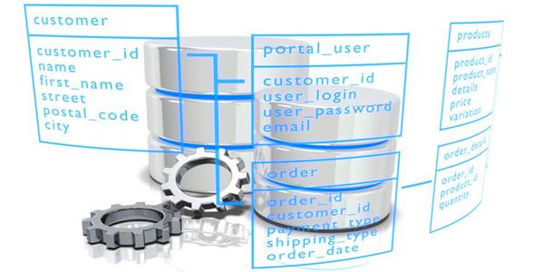
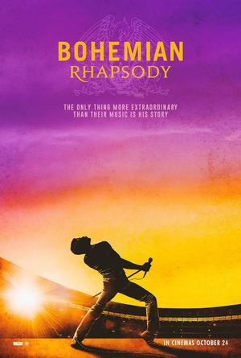
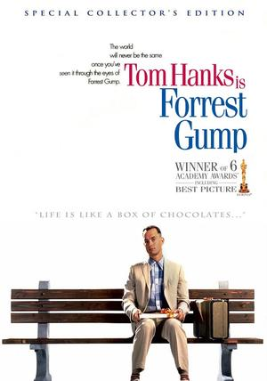

Agustín Ferrari
¡Hola! Soy estudiante de Desarrollo de Software a distancia. Me encuentro dando mis primeros pasos en el mundo IT.
Actualmente me estoy formando en programación con lenguaje C# y en gestión de bases de datos.
Me motiva aprender nuevas tecnologías y desarrollarme profesionalmente en el área del desarrollo web y de software.
Proyectos
Desarrollo y programación de software para gestión administrativa de empresas.

Diseño y mantenimiento de bases de datos.
Habilidades
- Gestión de bases de datos como MySql y MS Access
- Programación en lenguaje C# y Phyton
- Manejo de GitHub y Figma
- Nociones básicas de HTML, CSS y JavaScript
Contacto
Películas Favoritas
El Padrino
Una obra maestra del cine que narra el ascenso de la familia Corleone en el mundo del crimen organizado
Rapsodia Bohemia
Un homenaje a la banda Queen y a su icónico líder Freddie Mercury.
Forest Gump
Una historia entrañable sobre un hombre con una vida extraordinaria, que recorre décadas de la historia estadounidense.